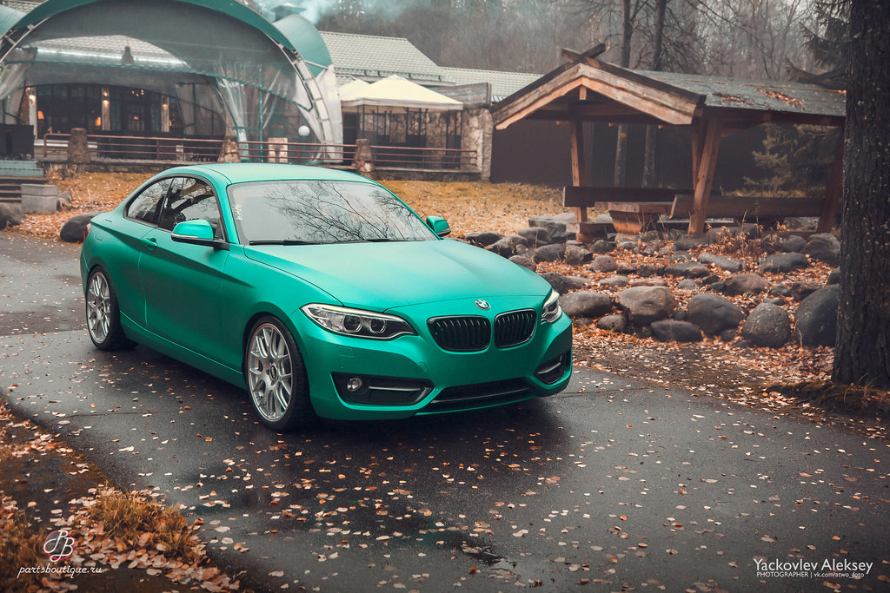

Немного информации о красных оттенках:
Алый
Розовый — лёгкий, ненасыщенный красный, цвет маргаритки
Кармин
Бордо
Кардинал
Багровый
Багряный
Ализариновый (крап, краплак)
Бордоского вина — красно-фиолетовый.
Брусьяный — красный, багряный, цвета брусники.
Вермильон (вермильоновый) — ярко-алый с оранжевым оттенком, от французского название такого цвета vermillion.
Гуляфный — красный, цвета спелых ягод шиповника.
Иудина дерева — ярко-розовый. Иудино дерево, или церцис, согласно преданию, является тем самым деревом, на
котором повесился Иуда, после того как предал Христа. Это дерево цветёт ярко-розовыми цветами.
Кошенилевый — ярко-красный, слегка малиновый.
Куропаткины глаза — светло-красный цвет.
Магово-гуляфный — красно-розовый.
Маджента — ярко-красный, между красным и фиолетовым.
Мареновый — окрашенный краской из растения марены, корень которого внутри красно-жёлтого цвета.
Маргаритовый цвет — ярко-пунцовый.
Маркизы Помпадур — сложный оттенок розового.
Массака́ — тёмно-красный с синим отливом или густо-лиловый цвет[10].
Мов — розовато-лиловый.
Московского пожара 1812 года — цвет огня в горящем городе, похож на цвет давленой брусники.
Накаратовый — оттенок красного, «жаркий».
Оброщеный — багряный.
Пюсовый — красно-бурый, коричневый оттенок красного, (от фр. puce — «блоха»).
Рдяный — красный, алый. Рдеть — гореть, воспаляться, краснеть, ярко алеть.
Серизовый — вишнёвый.
Сольферино — один из оттенков красного цвета — ярко-красный, ярко-розовый либо с лиловым оттенком. Название
появилось после битвы при Сольферино в 1859 году во время австро-итало-французской войны.
Немного информации об оттенках: Бильярдного (биллиардного) сукна — ядовито-зелёный (см. бильярд). Бирюзовый — от светло-зелёного с голубизной до голубовато-синего; цвет минералов бирюза и хризоколла. Брусничный — когда-то означал зелёный (по цвету листа брусники), а сейчас это один из оттенков красного: цвет спелых ягод брусники, светло-красный, густо-розовый. Вердепомовый — светло-зелёный; цвет незрелых яблок (фр. pomme; яблоко). Вердепешевый — жёлтый или розовый оттенок зелёного. Вердигри — серовато-зелёный (от фр. vert-de-gris). Гелиотроповый — цвета гелиотропа, тёмно-зелёный с пятнами красного или жёлтого цвета. Гороховый — серо-, зеленовато- или грязно-жёлтый. Во второй половине XIX века фразеологизмы «гороховая шинель» или «гороховое пальто» воспринимались как знак причастности к сыскному отделению, стали символом осведомителя[источник не указан 1336 дней]. Гусиного помёта (мердуа) — жёлто-зелёный с коричневым отливом (от фр. merdoie; merde d’oie; гусиный помёт). Драконьей зелени — очень тёмный зелёный. Еловый — тёмно-зелёный цвет с голубовато-зелёным оттенком. Зеленобагровый, зеленобурый — смесь зелёного и багрового, зелёного и бурого. Изумрудный — цвета изумруда. Лайм — насыщенный жёлтовато-зелёный, тёмный салатовый, цвет лайма. Лесная зелень — тёмно-зелёный, цвет хвойных. Лягушки в обмороке — светлый серо-зелёный. Малахит муравленый — характеристика гончарного изделия, например, горшка, покрытого глазурью, обычно зеленоватый. Малахитовый — цвет малахита. Муравчатый — неоднородный травяной, мелкокрапчатый. Мурамный, муаровый — травянисто-зелёный. Оливковый — тёмный жёлтовато-зелёный, цвет оливок. Осиновый — бледно-зелёный с сероватым оттенком, цвет ствола осины (см. осина). Папоротниковый — неярки зелёный, цвет папоротника. Салатовый — светло-, ярко- жёлто-зелёный. Селадоновый — серовато-зелёный (см. селадон). Сине-зелёный (цвет морской волны). Тёмно-бирюзовый — тёмный сине-зелёный, тёмный бирюзовый. Травяной — насыщенно-зелёный, цвет травы. Фисташковый — грязновато-светло-зелёный, цвет ядра фисташек[4]. Тёмный хаки — зелёно-коричневый. Шартрёз — светлый жёлто-зелёный, по одноимённому ликёру. Ярь—медянка — зелёная краска, получаемая путём окисления меди[5].
